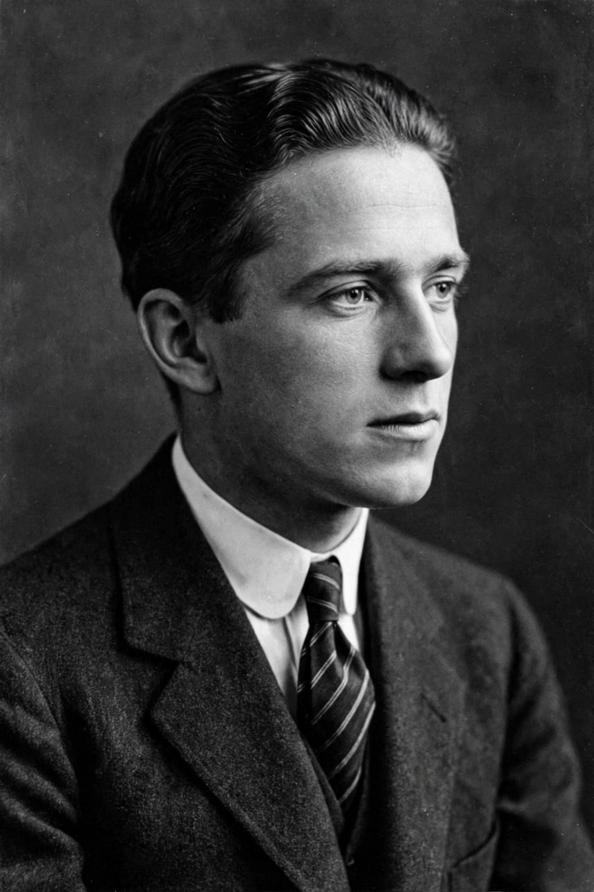

Werner Heisenberg
| Born | 5 December 1901, Würzburg, Germany |
|---|---|
| Died | 1 February 1976 (aged 74), Munich, West Germany |
| Known for | Uncertainty principle, matrix mechanics |
| Awards | Nobel Prize in Physics (1932) |

[Image: Portrait photograph of Werner Heisenberg in the 1930s]Werner Karl Heisenberg (5 December 1901 – 1 February 1976) was a German theoretical physicist and one of the main pioneers of quantum mechanics. He published his Umdeutung (reinterpretation) paper in 1925, laying the foundations of matrix mechanics, and formulated the uncertainty principle in 1927. He was awarded the Nobel Prize in Physics in 1932 'for the creation of quantum mechanics'.
Heisenberg also made contributions to the theories of hydrodynamics, atomic nuclei, ferromagnetism, cosmic rays and subatomic particles. During the Second World War he was the principal scientist in the German nuclear weapons programme, a role that has remained controversial.
Early life and education
Heisenberg was born in Würzburg, the son of a professor of Byzantine studies. He studied physics at the University of Munich under Arnold Sommerfeld, receiving his doctorate in 1923 with a thesis on turbulence in fluid streams. He then worked with Max Born at Göttingen and with Niels Bohr in Copenhagen, the two centres where the new quantum mechanics was forged.
Matrix mechanics and the uncertainty principle
In the summer of 1925, recovering from hay fever on the island of Heligoland, Heisenberg developed a new scheme of mechanics based only on observable quantities — the frequencies and intensities of spectral lines. Reworked with Born and Pascual Jordan, this became matrix mechanics, the first complete formulation of quantum mechanics, soon joined by Erwin Schrödinger's wave mechanics and Paul Dirac's transformation theory.
In 1927 Heisenberg announced the Uncertainty principle: there is a fundamental limit, set by Planck's constant, to the precision with which conjugate quantities such as position and momentum can be simultaneously known. The principle, together with Bohr's complementarity, became central to the Copenhagen interpretation of quantum mechanics, and was famously debated by Bohr and Albert Einstein.
The war years and afterwards
During the Second World War Heisenberg led the German uranium project. After the war he was interned at Farm Hall in England with other German nuclear scientists, where the detainees were recorded reacting to the news of the Hiroshima bomb. The extent of Heisenberg's commitment to building a bomb for Nazi Germany remains a subject of historical debate.
After the war he directed the Max Planck Institute for Physics, first in Göttingen and then in Munich, worked on unified field theory, and played a leading role in rebuilding German science. He died in Munich in 1976.